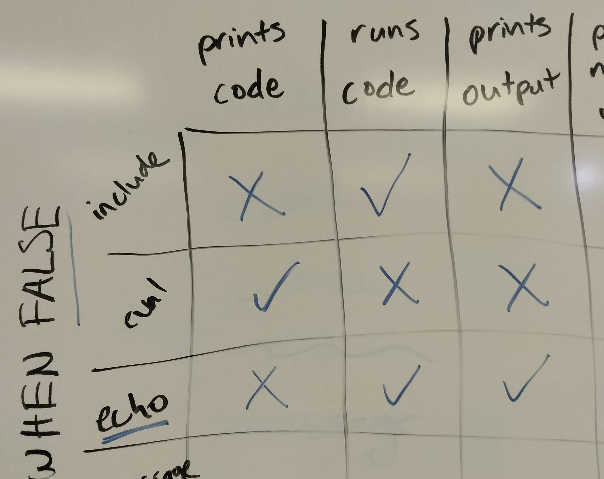
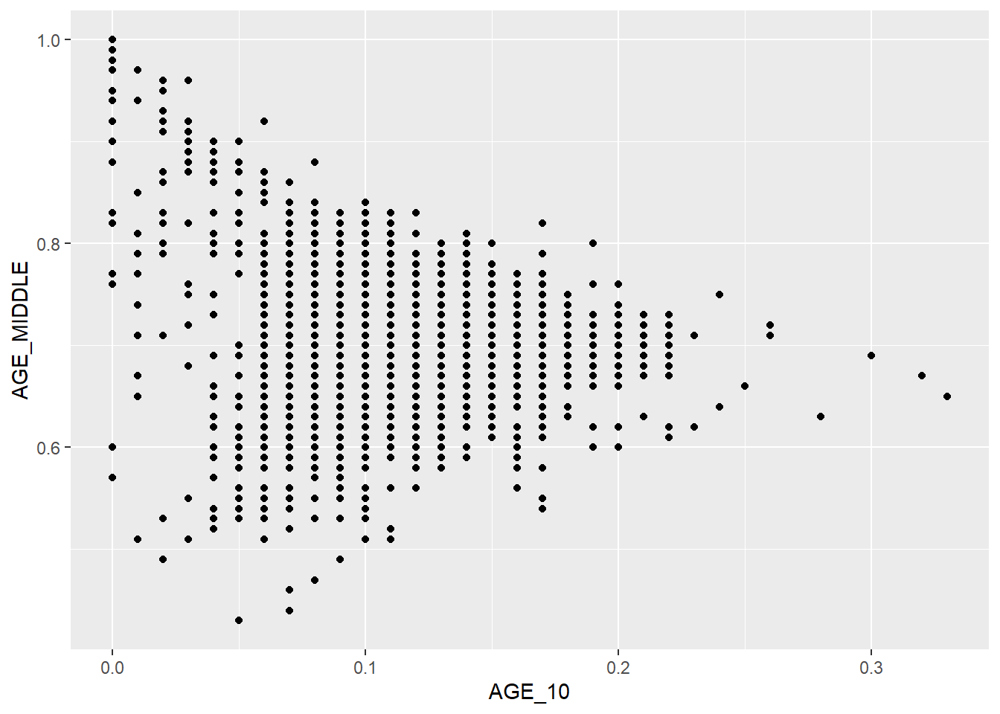

Code
```{r}
#| output: false
#| label: "read libraries"
library(tidyverse)
library(sf)
```Carolyn Koehn
This is the html output of the Quarto options we tested in class today.
Common code chunk options (all true by default):

We used the following code to test code chunk options to generate this table. We also added code chunk labels.
I’m getting data from this source. In literate programming, we would add more detail!

You can find more information on code chunk options here.
We implemented inline code by with the formula: `, r, a single space, some code, `.
The mean proportion of children 10 and under in the Northwest is 0.1140576.
You can find more information on inline code here.
# Heading 1
## Heading 2
### Heading 3
#### Heading 4
##### Heading 5
###### Heading 6
renders as:
**bold** renders as bold
_italics_ renders as italics
- bullet 1
- bullet 2
- another sub-bullet
- bullet 3
renders as:
1. number 1
2. number 2
renders as:
To comment out text outside code chunks, use <!-- at the beginning of a comment and --> at the end.
More information about text formatting in Quarto can be found here.
---
title: "Session 5 Live Code"
author: "Carolyn Koehn"
format: html
---
This is the html output of the Quarto options we tested in class today.
## Code chunk output options
Common code chunk options (all true by default):
- include
- eval
- echo
- warning
- message

We used the following code to test code chunk options to generate this table. We also added code chunk labels.
```{r}
#| echo: fenced
#| output: false
#| label: "read libraries"
library(tidyverse)
library(sf)
```
I'm getting data from this source. In literate programming, we would add more detail!
```{r}
#| eval: false
#| label: "read in cejst data"
cejst <- st_read("/opt/data/data/assignment01/cejst_nw.shp")
```
```{r}
#| include: false
cejst <- st_read("C:/Users/carolynkoehn/Documents/HES505_Fall_2024/data/2023/assignment01/cejst_nw.shp")
```
```{r}
#| echo: fenced
#| warning: false
ggplot(data = cejst, aes(x = AGE_10, y = AGE_MIDDLE)) +
geom_point()
```
You can find more information on code chunk options [here](https://quarto.org/docs/computations/execution-options.html).
## Inline code
We implemented inline code by with the formula: `` ` ``, `r`, a single space, some code, `` ` ``.
The mean proportion of children 10 and under in the Northwest is `r mean(cejst$AGE_10, na.rm=TRUE)`.
You can find more information on inline code [here](https://quarto.org/docs/computations/inline-code.html).
## Heading Styles
`# Heading 1`
`## Heading 2`
`### Heading 3`
`#### Heading 4`
`##### Heading 5`
`###### Heading 6`
renders as:
# Heading 1
## Heading 2
### Heading 3
#### Heading 4
##### Heading 5
###### Heading 6
## Text formatting
`**bold**` renders as **bold**
`_italics_` renders as _italics_
## Lists
### Bullet List
`- bullet 1`
` - bullet 2`
` - another sub-bullet`
`- bullet 3`
renders as:
- bullet 1
- bullet 2
- another sub-bullet
- bullet 3
### Numbered List
`1. number 1`
`2. number 2`
renders as:
1. number 1
2. number 2
## Commenting
To comment out text outside code chunks, use `<!--` at the beginning of a comment and `-->` at the end.
More information about text formatting in Quarto can be found [here](https://quarto.org/docs/authoring/markdown-basics.html).
<!--
1. number 1
2. number 2
-->